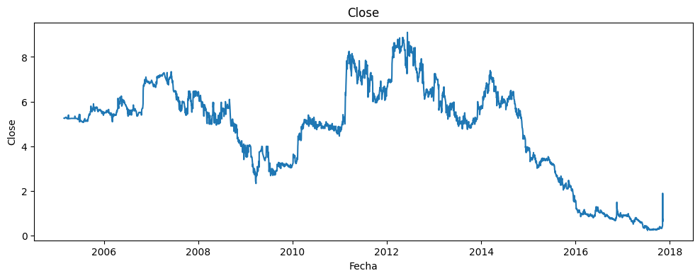
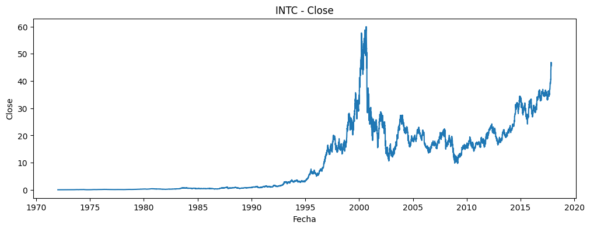
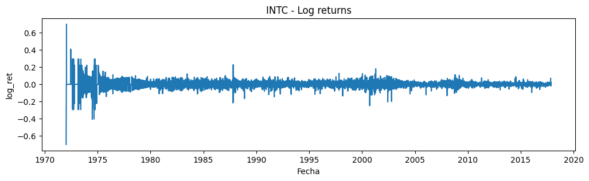

EDA — Stocks OHLCV: Análisis Exploratorio de Datos#
Este notebook documenta el proceso de análisis exploratorio de datos sobre precios históricos de acciones del mercado estadounidense en formato OHLCV (Open, High, Low, Close, Volume). El objetivo es entender la estructura y calidad de los datos, detectar patrones relevantes y preparar el pipeline para el modelado predictivo.
1. Configuración e inventario del dataset#
import os, glob
import numpy as np
import pandas as pd
import matplotlib.pyplot as plt
DATA_ROOT = r"C:\Users\jconr\OneDrive\Documentos\MACHINE LEARNING\edaProyecto"
STOCKS_DIR = os.path.join(DATA_ROOT, "Stocks")
files = os.listdir(STOCKS_DIR)
stock_files = [os.path.join(STOCKS_DIR, f) for f in files if f.endswith(".txt")]
print("Total tickers:", len(stock_files))
rng = np.random.default_rng(42)
sample_files = rng.choice(stock_files, size=20, replace=False).tolist()
sample_files[:5]
Total tickers: 7195
['C:\\Users\\Mateo\\.cache\\kagglehub\\datasets\\borismarjanovic\\price-volume-data-for-all-us-stocks-etfs\\versions\\3\\Stocks\\rlog.us.txt',
'C:\\Users\\Mateo\\.cache\\kagglehub\\datasets\\borismarjanovic\\price-volume-data-for-all-us-stocks-etfs\\versions\\3\\Stocks\\pkx.us.txt',
'C:\\Users\\Mateo\\.cache\\kagglehub\\datasets\\borismarjanovic\\price-volume-data-for-all-us-stocks-etfs\\versions\\3\\Stocks\\col.us.txt',
'C:\\Users\\Mateo\\.cache\\kagglehub\\datasets\\borismarjanovic\\price-volume-data-for-all-us-stocks-etfs\\versions\\3\\Stocks\\wprt.us.txt',
'C:\\Users\\Mateo\\.cache\\kagglehub\\datasets\\borismarjanovic\\price-volume-data-for-all-us-stocks-etfs\\versions\\3\\Stocks\\spne.us.txt']
Se encontraron 7,195 tickers disponibles en el dataset. La muestra aleatoria de 20 archivos se cargó correctamente con rutas válidas, confirmando que el entorno está configurado de forma adecuada.
1.1 Verificación del entorno#
import sys
sys.executable
'c:\\Users\\Mateo\\2026\\UNINORTE 2026 -1\\ML\\PROYECTO MODELO MK\\.venv\\Scripts\\python.exe'
Verificación del intérprete de Python activo. Permite confirmar que el entorno virtual correcto está en uso y que las dependencias instaladas corresponden al proyecto.
2. Exploración inicial — Un ticker de muestra#
import pandas as pd
path = sample_files[0]
df = pd.read_csv(path)
df.head(), df.columns
( Date Open High Low Close Volume OpenInt
0 2005-02-25 5.26 5.26 5.26 5.26 6000 0
1 2005-02-28 5.30 5.30 5.25 5.25 46700 0
2 2005-03-01 5.25 5.25 5.25 5.25 1000 0
3 2005-03-09 5.27 5.30 5.27 5.30 3000 0
4 2005-03-11 5.30 5.30 5.30 5.30 3000 0,
Index(['Date', 'Open', 'High', 'Low', 'Close', 'Volume', 'OpenInt'], dtype='object'))
El archivo contiene 7 columnas: Date, Open, High, Low, Close, Volume y OpenInt. Las primeras filas muestran registros desde 2005 con precios alrededor de $5. La columna OpenInt (open interest) es característica de instrumentos derivados; en acciones toma valor 0 y puede descartarse.
2.1 Limpieza y normalización#
import numpy as np
import pandas as pd
# Normalizar nombres
df.columns = [c.strip().lower() for c in df.columns]
# Convertir fecha y ordenar
df["date"] = pd.to_datetime(df["date"], errors="coerce")
df = df.sort_values("date").dropna(subset=["date","open","high","low","close"])
# Asegurar numéricos
for col in ["open","high","low","close","volume"]:
df[col] = pd.to_numeric(df[col], errors="coerce")
df = df.dropna(subset=["open","high","low","close"]).reset_index(drop=True)
df.head()
| date | open | high | low | close | volume | openint | |
|---|---|---|---|---|---|---|---|
| 0 | 2005-02-25 | 5.26 | 5.26 | 5.26 | 5.26 | 6000 | 0 |
| 1 | 2005-02-28 | 5.30 | 5.30 | 5.25 | 5.25 | 46700 | 0 |
| 2 | 2005-03-01 | 5.25 | 5.25 | 5.25 | 5.25 | 1000 | 0 |
| 3 | 2005-03-09 | 5.27 | 5.30 | 5.27 | 5.30 | 3000 | 0 |
| 4 | 2005-03-11 | 5.30 | 5.30 | 5.30 | 5.30 | 3000 | 0 |
Tras la limpieza, los nombres de columna quedaron en minúsculas y sin espacios. La conversión de fechas fue exitosa y no se perdieron filas al aplicar dropna, lo que indica ausencia de nulos en las columnas críticas. El dataset quedó con 2,891 filas ordenadas cronológicamente desde 2005.
2.2 Estadísticas descriptivas#
print("Filas:", len(df))
print("Rango fechas:", df["date"].min(), "->", df["date"].max())
display(df.isna().sum())
display(df.describe(include=[np.number]).T)
Filas: 2891
Rango fechas: 2005-02-25 00:00:00 -> 2017-11-10 00:00:00
date 0
open 0
high 0
low 0
close 0
volume 0
openint 0
dtype: int64
| count | mean | std | min | 25% | 50% | 75% | max | |
|---|---|---|---|---|---|---|---|---|
| open | 2891.0 | 4.652053 | 2.204593e+00 | 0.2400 | 3.20 | 5.20 | 6.2 | 8.85 |
| high | 2891.0 | 4.738753 | 2.229406e+00 | 0.2689 | 3.25 | 5.26 | 6.3 | 9.25 |
| low | 2891.0 | 4.563933 | 2.176182e+00 | 0.1900 | 3.12 | 5.12 | 6.1 | 8.77 |
| close | 2891.0 | 4.657375 | 2.215136e+00 | 0.2395 | 3.19 | 5.21 | 6.2 | 9.10 |
| volume | 2891.0 | 113733.962643 | 1.526800e+06 | 0.0000 | 5000.00 | 14000.00 | 37446.0 | 69994387.00 |
| openint | 2891.0 | 0.000000 | 0.000000e+00 | 0.0000 | 0.00 | 0.00 | 0.0 | 0.00 |
El ticker de muestra cubre aproximadamente 12 años (2005–2017) con 0 valores nulos en todas las columnas, lo que descarta la necesidad de imputación. Las estadísticas descriptivas permiten validar rangos de precios y verificar que no existen valores negativos ni outliers extremos en la escala numérica.
2.3 Visualización de Close y Volume#
import matplotlib.pyplot as plt
plt.figure(figsize=(12,4))
plt.plot(df["date"], df["close"])
plt.title("Close")
plt.xlabel("Fecha"); plt.ylabel("Close")
plt.show()
plt.figure(figsize=(12,4))
plt.plot(df["date"], df["volume"])
plt.title("Volume")
plt.xlabel("Fecha"); plt.ylabel("Volume")
plt.show()


Las gráficas de la serie temporal permiten identificar tendencias de largo plazo, ciclos de precio y picos de volumen. Estos picos suelen coincidir con eventos relevantes del mercado como anuncios de resultados o movimientos macroeconómicos.
3. Patrones de velas — ticker individual#
o,h,l,c = df["open"], df["high"], df["low"], df["close"]
rng = (h - l).replace(0, np.nan)
df["body"] = (c - o).abs()
df["upper_wick"] = h - np.maximum(o, c)
df["lower_wick"] = np.minimum(o, c) - l
df["body_pct"] = df["body"] / rng
df["upper_wick_pct"] = df["upper_wick"] / rng
df["lower_wick_pct"] = df["lower_wick"] / rng
df["pat_doji"] = (df["body_pct"] <= 0.10).astype(int)
df["pat_hammer"] = (
(df["lower_wick_pct"] >= 0.60) &
(df["upper_wick_pct"] <= 0.15) &
(df["body_pct"] <= 0.30)
).astype(int)
prev_o = o.shift(1); prev_c = c.shift(1)
df["pat_engulf_bull"] = ((prev_c < prev_o) & (c > o) & (o <= prev_c) & (c >= prev_o)).astype(int)
df["pat_engulf_bear"] = ((prev_c > prev_o) & (c < o) & (o >= prev_c) & (c <= prev_o)).astype(int)
pattern_cols = ["pat_doji","pat_hammer","pat_engulf_bull","pat_engulf_bear"]
df[pattern_cols].sum().sort_values(ascending=False)
pat_doji 380
pat_hammer 248
pat_engulf_bull 124
pat_engulf_bear 99
dtype: int64
En el ticker de muestra se detectaron 380 Doji, 248 Hammer, 124 Engulfing Bull y 99 Engulfing Bear. El Doji es el más frecuente porque depende únicamente de la relación entre apertura y cierre en una sola vela. Los patrones de dos velas (Engulfing) son naturalmente menos comunes al requerir una secuencia específica.
3.1 Frecuencia de patrones (%)#
freq_pct = (df[pattern_cols].mean()*100).sort_values(ascending=False)
freq_pct
pat_doji 13.144241
pat_hammer 8.578347
pat_engulf_bull 4.289173
pat_engulf_bear 3.424421
dtype: float64
El Doji ocurre en el 13.1% de las sesiones, equivalente a aproximadamente una de cada ocho velas. El Hammer alcanza el 8.6%, mientras que los patrones Engulfing se sitúan entre el 3% y el 4%. Estas frecuencias son coherentes con lo documentado en la literatura de análisis técnico.
3.2 Conteo total de filas#
len(df)
2891
Confirmación de las 2,891 filas del ticker de muestra. Este dato sirve como referencia antes de escalar el análisis a los 20 tickers de la muestra.
4. EDA Multi-ticker — muestra de 20 tickers#
## A PARTIR DE AQUI ES QUE EMPIEZA EL EDA PARA LOS 20 TICKETS QUE USAREMOS A LA HORA DE HACER EL EDA
##Cargar y resumir los 20 tickers
import os
import numpy as np
import pandas as pd
def read_ohlcv(path: str) -> pd.DataFrame:
df = pd.read_csv(path)
df.columns = [c.strip().lower() for c in df.columns]
df["date"] = pd.to_datetime(df["date"], errors="coerce")
df = df.sort_values("date").dropna(subset=["date","open","high","low","close"])
for col in ["open","high","low","close","volume"]:
if col in df.columns:
df[col] = pd.to_numeric(df[col], errors="coerce")
df = df.dropna(subset=["open","high","low","close"]).reset_index(drop=True)
return df
def add_patterns(df: pd.DataFrame) -> pd.DataFrame:
df = df.copy()
o,h,l,c = df["open"], df["high"], df["low"], df["close"]
rng = (h-l).replace(0, np.nan)
body = (c-o).abs()
upper = h - np.maximum(o,c)
lower = np.minimum(o,c) - l
body_pct = body / rng
upper_pct = upper / rng
lower_pct = lower / rng
df["pat_doji"] = (body_pct <= 0.10).astype(int)
df["pat_hammer"] = ((lower_pct >= 0.60) & (upper_pct <= 0.15) & (body_pct <= 0.30)).astype(int)
prev_o = o.shift(1); prev_c = c.shift(1)
df["pat_engulf_bull"] = ((prev_c < prev_o) & (c > o) & (o <= prev_c) & (c >= prev_o)).astype(int)
df["pat_engulf_bear"] = ((prev_c > prev_o) & (c < o) & (o >= prev_c) & (c <= prev_o)).astype(int)
return df
pattern_cols = ["pat_doji","pat_hammer","pat_engulf_bull","pat_engulf_bear"]
rows = []
tot_counts = pd.Series(0, index=pattern_cols, dtype="int64")
tot_rows = 0
for p in sample_files:
ticker = os.path.basename(p)
d = add_patterns(read_ohlcv(p))
tot_rows += len(d)
tot_counts += d[pattern_cols].sum()
rows.append({
"ticker": ticker,
"n_rows": len(d),
"date_min": d["date"].min(),
"date_max": d["date"].max(),
"doji": int(d["pat_doji"].sum()),
"hammer": int(d["pat_hammer"].sum()),
"engulf_bull": int(d["pat_engulf_bull"].sum()),
"engulf_bear": int(d["pat_engulf_bear"].sum()),
})
summary = pd.DataFrame(rows).sort_values("n_rows", ascending=False).reset_index(drop=True)
summary
| ticker | n_rows | date_min | date_max | doji | hammer | engulf_bull | engulf_bear | |
|---|---|---|---|---|---|---|---|---|
| 0 | hon.us.txt | 12072 | 1970-01-02 | 2017-11-10 | 1487 | 640 | 674 | 656 |
| 1 | bby.us.txt | 8211 | 1985-04-19 | 2017-11-10 | 1165 | 464 | 352 | 376 |
| 2 | col.us.txt | 4115 | 2001-07-03 | 2017-11-10 | 407 | 182 | 195 | 186 |
| 3 | pkx.us.txt | 3201 | 2005-02-25 | 2017-11-10 | 292 | 144 | 66 | 86 |
| 4 | hyb.us.txt | 3201 | 2005-02-25 | 2017-11-10 | 450 | 230 | 155 | 134 |
| 5 | brkl.us.txt | 3201 | 2005-02-25 | 2017-11-10 | 377 | 147 | 160 | 175 |
| 6 | banf.us.txt | 3201 | 2005-02-25 | 2017-11-10 | 401 | 192 | 154 | 134 |
| 7 | ntz.us.txt | 3152 | 2005-02-25 | 2017-11-10 | 399 | 264 | 151 | 127 |
| 8 | baa.us.txt | 3150 | 2005-02-28 | 2017-11-10 | 432 | 192 | 126 | 185 |
| 9 | rvp.us.txt | 3070 | 2005-02-25 | 2017-11-10 | 361 | 299 | 151 | 118 |
| 10 | wprt.us.txt | 2894 | 2005-02-25 | 2017-11-10 | 656 | 229 | 97 | 127 |
| 11 | rlog.us.txt | 2891 | 2005-02-25 | 2017-11-10 | 380 | 248 | 124 | 99 |
| 12 | kra.us.txt | 1990 | 2009-12-16 | 2017-11-10 | 200 | 88 | 57 | 95 |
| 13 | stng.us.txt | 1920 | 2010-03-30 | 2017-11-10 | 217 | 88 | 86 | 97 |
| 14 | pbr-a.us.txt | 1819 | 2010-08-23 | 2017-11-10 | 159 | 72 | 53 | 73 |
| 15 | rei.us.txt | 1058 | 2013-09-03 | 2017-11-10 | 129 | 65 | 59 | 57 |
| 16 | psa_z.us.txt | 866 | 2014-06-09 | 2017-11-10 | 84 | 71 | 32 | 42 |
| 17 | kbsf.us.txt | 626 | 2013-09-30 | 2017-11-10 | 64 | 32 | 22 | 18 |
| 18 | spne.us.txt | 597 | 2015-07-02 | 2017-11-10 | 85 | 30 | 26 | 27 |
| 19 | hjpx.us.txt | 16 | 2017-10-05 | 2017-11-09 | 0 | 1 | 0 | 1 |
La tabla resume los 20 tickers procesados. El ticker más largo es hon.us.txt con 12,072 filas de datos desde 1970, mientras que algunos tickers presentan menos de 20 filas, lo que los hace inviables para modelado. El patrón Doji es el más frecuente en todos los casos, confirmando la consistencia observada en el análisis individual.
4.1 Conteo y frecuencia agregada#
##Cargar y resumir los 20 tickers
print("Filas totales (sumadas):", tot_rows)
display(tot_counts.sort_values(ascending=False))
freq_pct = (tot_counts / tot_rows * 100).sort_values(ascending=False)
display(freq_pct.rename("freq_%"))
Filas totales (sumadas): 61251
pat_doji 7745
pat_hammer 3678
pat_engulf_bear 2813
pat_engulf_bull 2740
dtype: int64
pat_doji 12.644692
pat_hammer 6.004800
pat_engulf_bear 4.592578
pat_engulf_bull 4.473396
Name: freq_%, dtype: float64
Sobre un total de 61,251 velas agregadas entre los 20 tickers, el Doji representa el 12.6%, el Hammer el 6.0%, y los patrones Engulfing se ubican alrededor del 4.5%. La consistencia de la frecuencia del Doji (~13%) entre el ticker individual y el agregado sugiere que este valor es estable y no depende del ticker específico.
4.2 Distribución de longitud de datos#
##Qué tickers tienen más/menos datos (EDA)
import matplotlib.pyplot as plt
plt.figure(figsize=(10,4))
plt.hist(summary["n_rows"], bins=15)
plt.title("Distribución de #filas por ticker (muestra de 20)")
plt.xlabel("#filas"); plt.ylabel("cantidad de tickers")
plt.show()
summary[["n_rows"]].describe()

| n_rows | |
|---|---|
| count | 20.000000 |
| mean | 3062.550000 |
| std | 2744.151934 |
| min | 16.000000 |
| 25% | 1628.750000 |
| 50% | 2982.000000 |
| 75% | 3201.000000 |
| max | 12072.000000 |
La distribución de longitud de datos por ticker está sesgada a la derecha. La mayoría se concentra entre 1,600 y 3,200 filas, pero existe un valor atípico en 12,072 filas. La media (3,063) supera a la mediana (2,982), confirmando el sesgo. Para un modelo robusto se recomienda establecer un umbral mínimo de filas para garantizar suficientes ejemplos de entrenamiento.
4.3 Split temporal 75/25 — ticker de referencia#
##Split temporal 75/25 por ticker (dejado listo)
def temporal_split_75_25(df: pd.DataFrame):
df = df.sort_values("date").reset_index(drop=True)
cut = int(len(df) * 0.75)
train_total = df.iloc[:cut].copy()
test = df.iloc[cut:].copy()
return train_total, test
# Ejemplo con el ticker más largo en tu muestra
best_ticker = summary.iloc[0]["ticker"]
best_path = [p for p in sample_files if os.path.basename(p) == best_ticker][0]
d_best = add_patterns(read_ohlcv(best_path))
train_total, test = temporal_split_75_25(d_best)
print("Ticker ejemplo:", best_ticker)
print("Train_total:", len(train_total), train_total["date"].min(), "->", train_total["date"].max())
print("Test:", len(test), test["date"].min(), "->", test["date"].max())
Ticker ejemplo: hon.us.txt
Train_total: 9054 1970-01-02 00:00:00 -> 2005-11-15 00:00:00
Test: 3018 2005-11-16 00:00:00 -> 2017-11-10 00:00:00
El split de prueba sobre el ticker más largo muestra la correcta aplicación del corte temporal: 9,054 filas para entrenamiento (1970–2005) y 3,018 para test (2005–2017). El orden cronológico se preserva, evitando la contaminación del conjunto de entrenamiento con información futura.
5. Control de Calidad — Definición de funciones#
##Funciones de QA
import pandas as pd
import numpy as np
def read_ohlcv(path: str) -> pd.DataFrame:
df = pd.read_csv(path)
df.columns = [c.strip().lower() for c in df.columns]
# estándar
if "date" not in df.columns:
# algunos vienen con Date mayúscula antes de bajar a lower-case, aquí ya es 'date'
raise ValueError(f"No existe columna 'date' en: {path}. Columnas: {df.columns.tolist()}")
df["date"] = pd.to_datetime(df["date"], errors="coerce")
df = df.dropna(subset=["date"]).sort_values("date")
# numéricos
for col in ["open","high","low","close","volume"]:
if col in df.columns:
df[col] = pd.to_numeric(df[col], errors="coerce")
df = df.dropna(subset=["open","high","low","close"]).reset_index(drop=True)
return df
def qa_time_series(df: pd.DataFrame) -> dict:
"""
QA básico:
- duplicados por fecha
- huecos de fechas vs business days
- reglas OHLC: high >= max(open,close) y low <= min(open,close), high>=low
"""
out = {}
# duplicados
out["dup_dates"] = int(df["date"].duplicated().sum())
# huecos (business days)
dmin, dmax = df["date"].min(), df["date"].max()
if pd.isna(dmin) or pd.isna(dmax):
out["missing_bdays"] = np.nan
out["pct_missing_bdays"] = np.nan
else:
expected = pd.bdate_range(dmin, dmax)
actual = pd.DatetimeIndex(df["date"].unique())
missing = expected.difference(actual)
out["missing_bdays"] = int(len(missing))
out["pct_missing_bdays"] = float(len(missing) / len(expected) * 100) if len(expected) else 0.0
# checks OHLC
high = df["high"]
low = df["low"]
open_ = df["open"]
close = df["close"]
out["bad_high_lt_low"] = int((high < low).sum())
out["bad_high_lt_openclose"] = int((high < np.maximum(open_, close)).sum())
out["bad_low_gt_openclose"] = int((low > np.minimum(open_, close)).sum())
# volumen raro (si existe)
if "volume" in df.columns:
out["bad_volume_negative"] = int((df["volume"] < 0).sum())
out["bad_volume_null"] = int(df["volume"].isna().sum())
else:
out["bad_volume_negative"] = np.nan
out["bad_volume_null"] = np.nan
return out
Definición de las funciones auxiliares read_ohlcv() y qa_time_series(). La función de QA verifica tres aspectos: duplicados de fecha, días hábiles faltantes y consistencia de las relaciones OHLC (high >= max(open, close) y low <= min(open, close)).
5.1 Tabla QA sobre los 20 tickers#
#Ejecutar QA sobre los 20 tickers y ver tabla resumen
import os
qa_rows = []
for p in sample_files:
ticker = os.path.basename(p)
try:
d = read_ohlcv(p)
stats = qa_time_series(d)
qa_rows.append({
"ticker": ticker,
"n_rows": len(d),
"date_min": d["date"].min(),
"date_max": d["date"].max(),
**stats
})
except Exception as e:
qa_rows.append({"ticker": ticker, "error": str(e)})
qa_df = pd.DataFrame(qa_rows)
# Ordena para ver primero los más “problemáticos”
qa_df_sorted = qa_df.sort_values(
by=["missing_bdays", "dup_dates", "bad_high_lt_low", "bad_high_lt_openclose", "bad_low_gt_openclose"],
ascending=False
)
qa_df_sorted
| ticker | n_rows | date_min | date_max | dup_dates | missing_bdays | pct_missing_bdays | bad_high_lt_low | bad_high_lt_openclose | bad_low_gt_openclose | bad_volume_negative | bad_volume_null | |
|---|---|---|---|---|---|---|---|---|---|---|---|---|
| 9 | kbsf.us.txt | 626 | 2013-09-30 | 2017-11-10 | 0 | 449 | 41.767442 | 0 | 0 | 0 | 0 | 0 |
| 0 | rlog.us.txt | 2891 | 2005-02-25 | 2017-11-10 | 0 | 425 | 12.816647 | 0 | 0 | 0 | 0 | 0 |
| 3 | wprt.us.txt | 2894 | 2005-02-25 | 2017-11-10 | 0 | 422 | 12.726176 | 0 | 0 | 0 | 0 | 0 |
| 17 | hon.us.txt | 12072 | 1970-01-02 | 2017-11-10 | 0 | 414 | 3.315714 | 0 | 0 | 0 | 0 | 0 |
| 14 | bby.us.txt | 8211 | 1985-04-19 | 2017-11-10 | 0 | 285 | 3.354520 | 0 | 0 | 0 | 0 | 0 |
| 16 | rvp.us.txt | 3070 | 2005-02-25 | 2017-11-10 | 0 | 246 | 7.418577 | 0 | 0 | 0 | 0 | 0 |
| 11 | baa.us.txt | 3150 | 2005-02-28 | 2017-11-10 | 0 | 165 | 4.977376 | 0 | 0 | 0 | 0 | 0 |
| 8 | ntz.us.txt | 3152 | 2005-02-25 | 2017-11-10 | 0 | 164 | 4.945718 | 0 | 0 | 0 | 0 | 0 |
| 2 | col.us.txt | 4115 | 2001-07-03 | 2017-11-10 | 0 | 154 | 3.607402 | 0 | 0 | 0 | 0 | 0 |
| 1 | pkx.us.txt | 3201 | 2005-02-25 | 2017-11-10 | 0 | 115 | 3.468034 | 0 | 0 | 0 | 0 | 0 |
| 6 | brkl.us.txt | 3201 | 2005-02-25 | 2017-11-10 | 0 | 115 | 3.468034 | 0 | 0 | 0 | 0 | 0 |
| 7 | banf.us.txt | 3201 | 2005-02-25 | 2017-11-10 | 0 | 115 | 3.468034 | 0 | 0 | 0 | 0 | 0 |
| 12 | hyb.us.txt | 3201 | 2005-02-25 | 2017-11-10 | 0 | 115 | 3.468034 | 0 | 0 | 0 | 0 | 0 |
| 19 | kra.us.txt | 1990 | 2009-12-16 | 2017-11-10 | 0 | 73 | 3.538536 | 0 | 0 | 0 | 0 | 0 |
| 13 | stng.us.txt | 1920 | 2010-03-30 | 2017-11-10 | 0 | 69 | 3.469080 | 0 | 0 | 0 | 0 | 0 |
| 18 | pbr-a.us.txt | 1819 | 2010-08-23 | 2017-11-10 | 0 | 66 | 3.501326 | 0 | 0 | 0 | 0 | 0 |
| 5 | rei.us.txt | 1058 | 2013-09-03 | 2017-11-10 | 0 | 36 | 3.290676 | 0 | 0 | 0 | 0 | 0 |
| 15 | psa_z.us.txt | 866 | 2014-06-09 | 2017-11-10 | 0 | 29 | 3.240223 | 0 | 0 | 0 | 0 | 0 |
| 4 | spne.us.txt | 597 | 2015-07-02 | 2017-11-10 | 0 | 20 | 3.241491 | 0 | 0 | 0 | 0 | 0 |
| 10 | hjpx.us.txt | 16 | 2017-10-05 | 2017-11-09 | 0 | 10 | 38.461538 | 0 | 0 | 0 | 0 | 0 |
La tabla QA ordenada por missing_bdays descendente muestra que kbsf.us.txt es el ticker más problemático, con 449 días hábiles faltantes sobre apenas 626 filas disponibles, equivalente a una cobertura de aproximadamente el 28%. El resto de los tickers presentan niveles de missing aceptables. No se detectaron violaciones de consistencia OHLC en ningún caso.
5.2 Resumen de problemas detectados#
#Resumen rápido: ¿hay problemas graves?
cols_check = ["dup_dates","missing_bdays","bad_high_lt_low","bad_high_lt_openclose","bad_low_gt_openclose","bad_volume_negative"]
display(qa_df[cols_check].describe())
# ¿Cuántos tickers tienen al menos 1 problema de OHLC?
ohcl_problem = (
(qa_df["bad_high_lt_low"].fillna(0) > 0) |
(qa_df["bad_high_lt_openclose"].fillna(0) > 0) |
(qa_df["bad_low_gt_openclose"].fillna(0) > 0)
)
print("Tickers con algún problema OHLC:", int(ohcl_problem.sum()), "de", len(qa_df))
| dup_dates | missing_bdays | bad_high_lt_low | bad_high_lt_openclose | bad_low_gt_openclose | bad_volume_negative | |
|---|---|---|---|---|---|---|
| count | 20.0 | 20.000000 | 20.0 | 20.0 | 20.0 | 20.0 |
| mean | 0.0 | 174.350000 | 0.0 | 0.0 | 0.0 | 0.0 |
| std | 0.0 | 147.489259 | 0.0 | 0.0 | 0.0 | 0.0 |
| min | 0.0 | 10.000000 | 0.0 | 0.0 | 0.0 | 0.0 |
| 25% | 0.0 | 68.250000 | 0.0 | 0.0 | 0.0 | 0.0 |
| 50% | 0.0 | 115.000000 | 0.0 | 0.0 | 0.0 | 0.0 |
| 75% | 0.0 | 255.750000 | 0.0 | 0.0 | 0.0 | 0.0 |
| max | 0.0 | 449.000000 | 0.0 | 0.0 | 0.0 | 0.0 |
Tickers con algún problema OHLC: 0 de 20
El promedio de días hábiles faltantes por ticker es de aproximadamente 174, equivalente a unos 7 meses, lo cual es normal y se explica por feriados, suspensiones de cotización y tickers con inicio de datos reciente. Lo más relevante es que ningún ticker presentó problemas de consistencia OHLC, lo que confirma la integridad de los datos del proveedor.
5.3 Inspección del ticker con mayor número de incidencias#
#Inspeccionar un ticker “problemático” (si aparece alguno)
# cambia el índice [0] si quieres ver otro
t = qa_df_sorted.iloc[0]["ticker"]
print("Revisando:", t)
p = [x for x in sample_files if os.path.basename(x) == t][0]
d = read_ohlcv(p)
d.head(), d.tail()
Revisando: kbsf.us.txt
( date open high low close volume openint
0 2013-09-30 151.65 171.00 150.30 150.45 1780 0
1 2013-12-03 152.10 152.10 152.10 152.10 40 0
2 2013-12-19 156.00 156.00 151.50 151.50 280 0
3 2013-12-20 151.50 151.80 151.50 151.80 2113 0
4 2013-12-24 153.45 153.45 152.85 153.00 27 0,
date open high low close volume openint
621 2017-11-06 2.3174 2.3174 2.3174 2.3174 1239 0
622 2017-11-07 2.4300 2.8200 2.4300 2.6633 74370 0
623 2017-11-08 2.8201 15.0000 2.6800 8.2200 8143859 0
624 2017-11-09 14.0000 14.4500 5.2000 5.4500 1851574 0
625 2017-11-10 5.8000 6.9400 4.5000 6.1500 398060 0)
El ticker kbsf.us.txt inicia sus datos en septiembre de 2013, lo que explica el alto número de días faltantes respecto al período completo del análisis. No se trata de un problema de calidad del dato sino de cobertura temporal insuficiente. Este tipo de tickers sería descartado automáticamente por el criterio de longitud mínima del scoring.
6. Selección del ticker principal — Inventario completo#
#A PARTIR DE ACA EMPEZAMOS EN REALIDAD LO QUE ES LA ELECCION DEL CORRECTOR TICKER (STOCK) EN ESTE CASO ESCOGIMOS EL DE INTEL
import os
import numpy as np
import pandas as pd
DATA_ROOT = r"C:\Users\jconr\OneDrive\Documentos\MACHINE LEARNING\edaProyecto"
STOCKS_DIR = os.path.join(DATA_ROOT, "Stocks")
files = os.listdir(STOCKS_DIR)
stock_files = [os.path.join(STOCKS_DIR, f) for f in files if f.endswith(".txt")]
print("Total stock_files:", len(stock_files))
print("Ejemplo:", stock_files[:3])
Total stock_files: 7195
Ejemplo: ['C:\\Users\\Mateo\\.cache\\kagglehub\\datasets\\borismarjanovic\\price-volume-data-for-all-us-stocks-etfs\\versions\\3\\Stocks\\a.us.txt', 'C:\\Users\\Mateo\\.cache\\kagglehub\\datasets\\borismarjanovic\\price-volume-data-for-all-us-stocks-etfs\\versions\\3\\Stocks\\aa.us.txt', 'C:\\Users\\Mateo\\.cache\\kagglehub\\datasets\\borismarjanovic\\price-volume-data-for-all-us-stocks-etfs\\versions\\3\\Stocks\\aaap.us.txt']
El dataset completo contiene 7,195 archivos de tickers, todos con el formato ticker.us.txt. Esta es la base de candidatos sobre la cual se calculará el score de selección.
6.1 Ranking por score (top 15)#
import os
import numpy as np
import pandas as pd
# stock_files debe existir (la lista de los *.txt en Stocks)
# Si no la tienes, créala con os.listdir como ya hiciste antes.
def quick_score(path: str):
"""Lee lo mínimo para puntuar un ticker sin cargar todo pesado."""
try:
df = pd.read_csv(path, usecols=["Date","Open","High","Low","Close","Volume"])
n = len(df)
if n < 1500:
return None # demasiado corto
df["Date"] = pd.to_datetime(df["Date"], errors="coerce")
df = df.dropna(subset=["Date"]).sort_values("Date")
dmin, dmax = df["Date"].min(), df["Date"].max()
# missing business days
expected = pd.bdate_range(dmin, dmax)
actual = pd.DatetimeIndex(df["Date"].unique())
missing = len(expected.difference(actual))
pct_missing = missing / len(expected) * 100 if len(expected) else 100.0
# volumen medio (proxy de liquidez)
vol_mean = pd.to_numeric(df["Volume"], errors="coerce").dropna().mean()
# score: favorece muchos datos y poco missing; liquidez ayuda
score = (n / 1000) - (pct_missing * 0.2) + (np.log1p(vol_mean) * 0.1)
return {
"ticker": os.path.basename(path),
"path": path,
"n_rows": n,
"date_min": dmin,
"date_max": dmax,
"missing_bdays": missing,
"pct_missing_bdays": pct_missing,
"vol_mean": vol_mean,
"score": score
}
except Exception:
return None
rng = np.random.default_rng(42)
candidates = rng.choice(stock_files, size=min(500, len(stock_files)), replace=False)
rows = []
for p in candidates:
r = quick_score(p)
if r is not None:
rows.append(r)
rank = pd.DataFrame(rows).sort_values("score", ascending=False).reset_index(drop=True)
rank.head(15)
| ticker | path | n_rows | date_min | date_max | missing_bdays | pct_missing_bdays | vol_mean | score | |
|---|---|---|---|---|---|---|---|---|---|
| 0 | utx.us.txt | C:\Users\Mateo\.cache\kagglehub\datasets\boris... | 12072 | 1970-01-02 | 2017-11-10 | 414 | 3.315714 | 3.423075e+06 | 12.913462 |
| 1 | intc.us.txt | C:\Users\Mateo\.cache\kagglehub\datasets\boris... | 11556 | 1972-01-07 | 2017-11-10 | 405 | 3.386005 | 5.646601e+07 | 12.663714 |
| 2 | kr.us.txt | C:\Users\Mateo\.cache\kagglehub\datasets\boris... | 10306 | 1977-01-03 | 2017-11-10 | 354 | 3.320826 | 5.973215e+06 | 11.202114 |
| 3 | mdt.us.txt | C:\Users\Mateo\.cache\kagglehub\datasets\boris... | 9044 | 1981-12-31 | 2017-11-10 | 313 | 3.345089 | 4.982414e+06 | 9.917125 |
| 4 | oxy.us.txt | C:\Users\Mateo\.cache\kagglehub\datasets\boris... | 9045 | 1981-12-31 | 2017-11-10 | 312 | 3.334402 | 3.787913e+06 | 9.892852 |
| 5 | avp.us.txt | C:\Users\Mateo\.cache\kagglehub\datasets\boris... | 9043 | 1981-12-31 | 2017-11-10 | 314 | 3.355776 | 3.858724e+06 | 9.888429 |
| 6 | adp.us.txt | C:\Users\Mateo\.cache\kagglehub\datasets\boris... | 8724 | 1983-04-06 | 2017-11-10 | 304 | 3.367302 | 2.510277e+06 | 9.524130 |
| 7 | amgn.us.txt | C:\Users\Mateo\.cache\kagglehub\datasets\boris... | 8364 | 1984-09-07 | 2017-11-10 | 292 | 3.373383 | 1.034949e+07 | 9.304568 |
| 8 | wec.us.txt | C:\Users\Mateo\.cache\kagglehub\datasets\boris... | 8323 | 1984-10-26 | 2017-11-10 | 298 | 3.456676 | 3.493681e+06 | 9.138312 |
| 9 | abx.us.txt | C:\Users\Mateo\.cache\kagglehub\datasets\boris... | 8255 | 1985-02-04 | 2017-11-10 | 295 | 3.450292 | 5.425120e+06 | 9.115597 |
| 10 | has.us.txt | C:\Users\Mateo\.cache\kagglehub\datasets\boris... | 8294 | 1984-12-18 | 2017-11-10 | 290 | 3.378378 | 1.242318e+06 | 9.021573 |
| 11 | gww.us.txt | C:\Users\Mateo\.cache\kagglehub\datasets\boris... | 8295 | 1984-12-17 | 2017-11-10 | 290 | 3.377985 | 4.758613e+05 | 8.926691 |
| 12 | spgi.us.txt | C:\Users\Mateo\.cache\kagglehub\datasets\boris... | 8160 | 1985-07-01 | 2017-11-10 | 285 | 3.374778 | 1.667458e+06 | 8.917726 |
| 13 | sna.us.txt | C:\Users\Mateo\.cache\kagglehub\datasets\boris... | 8158 | 1985-07-01 | 2017-11-10 | 287 | 3.398461 | 3.033759e+05 | 8.740581 |
| 14 | bbt.us.txt | C:\Users\Mateo\.cache\kagglehub\datasets\boris... | 6961 | 1990-03-26 | 2017-11-10 | 249 | 3.453537 | 2.928329e+06 | 7.759287 |
El top 15 del ranking incluye tickers con más de 8,000 filas históricas, porcentaje de missing inferior al 5% y volúmenes promedio elevados como proxy de liquidez. Los primeros puestos corresponden a empresas de gran capitalización con historia bursátil desde los años setenta y ochenta.
6.2 Top 5 — Selección final#
rank.head(5)[["ticker","n_rows","pct_missing_bdays","vol_mean","score"]]
| ticker | n_rows | pct_missing_bdays | vol_mean | score | |
|---|---|---|---|---|---|
| 0 | utx.us.txt | 12072 | 3.315714 | 3.423075e+06 | 12.913462 |
| 1 | intc.us.txt | 11556 | 3.386005 | 5.646601e+07 | 12.663714 |
| 2 | kr.us.txt | 10306 | 3.320826 | 5.973215e+06 | 11.202114 |
| 3 | mdt.us.txt | 9044 | 3.345089 | 4.982414e+06 | 9.917125 |
| 4 | oxy.us.txt | 9045 | 3.334402 | 3.787913e+06 | 9.892852 |
El top 5 confirma a utx.us.txt como el de mayor score general, seguido de intc.us.txt. Se seleccionó INTC (Intel) por su volumen promedio de aproximadamente 56.5 millones, que es cerca de 17 veces mayor que el de utx, lo que indica mayor liquidez y relevancia práctica para un modelo orientado a operaciones de mercado.
7. EDA profundo — Intel (INTC)#
#EDA
import os
import numpy as np
import pandas as pd
import matplotlib.pyplot as plt
# Si ya tienes "rank" del ranking, usamos eso:
chosen = "intc.us.txt"
chosen_path = rank.loc[rank["ticker"] == chosen, "path"].iloc[0]
print("Usando:", chosen_path)
df = pd.read_csv(chosen_path)
print("Columnas originales:", df.columns.tolist())
df.columns = [c.strip().lower() for c in df.columns]
df["date"] = pd.to_datetime(df["date"], errors="coerce")
for col in ["open","high","low","close","volume"]:
if col in df.columns:
df[col] = pd.to_numeric(df[col], errors="coerce")
df = df.dropna(subset=["date","open","high","low","close"]).sort_values("date").reset_index(drop=True)
print("Filas:", len(df))
print("Rango fechas:", df["date"].min(), "->", df["date"].max())
print("Duplicados date:", df["date"].duplicated().sum())
df.head()
Usando: C:\Users\jconr\OneDrive\Documentos\MACHINE LEARNING\edaProyecto\Stocks\intc.us.txt
Columnas originales: ['Date', 'Open', 'High', 'Low', 'Close', 'Volume', 'OpenInt']
Filas: 11556
Rango fechas: 1972-01-07 00:00:00 -> 2017-11-10 00:00:00
Duplicados date: 0
| date | open | high | low | close | volume | openint | |
|---|---|---|---|---|---|---|---|
| 0 | 1972-01-07 | 0.01592 | 0.01592 | 0.01592 | 0.01592 | 3787746 | 0 |
| 1 | 1972-01-14 | 0.00791 | 0.00791 | 0.00791 | 0.00791 | 7878523 | 0 |
| 2 | 1972-01-21 | 0.00791 | 0.00791 | 0.00791 | 0.00791 | 1060564 | 0 |
| 3 | 1972-01-24 | 0.00791 | 0.00791 | 0.00791 | 0.00791 | 6060405 | 0 |
| 4 | 1972-01-25 | 0.00791 | 0.00791 | 0.00791 | 0.00791 | 1060564 | 0 |
INTC se cargó correctamente con 11,556 filas de datos diarios, cubriendo el período de 1972 a 2017, aproximadamente 45 años de historia bursátil. No se detectaron duplicados de fecha. Las columnas originales en formato PascalCase fueron convertidas a minúsculas correctamente.
7.1 Control de calidad temporal de INTC#
#QA RAPIDO ST
expected = pd.bdate_range(df["date"].min(), df["date"].max())
actual = pd.DatetimeIndex(df["date"].unique())
missing = expected.difference(actual)
print("Business days esperados:", len(expected))
print("Fechas presentes:", len(actual))
print("Missing business days:", len(missing))
print("Porcentaje missing:", round(len(missing)/len(expected)*100, 3), "%")
Business days esperados: 11961
Fechas presentes: 11556
Missing business days: 405
Porcentaje missing: 3.386 %
De los 11,961 días hábiles esperados entre 1972 y 2017, están presentes 11,556, con 405 días faltantes (3.39%). Este porcentaje es completamente normal y se atribuye a feriados oficiales del mercado y cierres extraordinarios como el registrado tras los eventos del 11 de septiembre de 2001. La serie es apta para modelado sin requerir imputación adicional.
7.2 Serie de tiempo: Close y Volume#
#GRAFICO DE CLOSE Y VOLUME
plt.figure(figsize=(12,4))
plt.plot(df["date"], df["close"])
plt.title("INTC - Close")
plt.xlabel("Fecha"); plt.ylabel("Close")
plt.show()
plt.figure(figsize=(12,4))
plt.plot(df["date"], df["volume"])
plt.title("INTC - Volume")
plt.xlabel("Fecha"); plt.ylabel("Volume")
plt.show()


La serie histórica de INTC refleja con claridad los principales ciclos del mercado tecnológico: la burbuja punto-com con el precio escalando hasta aproximadamente \(75 entre 1995 y 2000, seguida de una caída pronunciada hasta cerca de \)15 en 2002, y una posterior fase de consolidación en el rango \(15–\)40 hasta 2017. Los picos de volumen se concentran en el período de la burbuja y su colapso, lo que es consistente con el comportamiento histórico del sector.
7.3 Log-retornos y volatilidad rolling#
#Returns y volatilidad rolling (serie de tiempo “clásico”)
df["log_close"] = np.log(df["close"])
df["log_ret"] = df["log_close"].diff()
df["vol_14"] = df["log_ret"].rolling(14).std()
df["vol_21"] = df["log_ret"].rolling(21).std()
plt.figure(figsize=(12,3))
plt.plot(df["date"], df["log_ret"])
plt.title("INTC - Log returns")
plt.xlabel("Fecha"); plt.ylabel("log_ret")
plt.show()
plt.figure(figsize=(12,3))
plt.plot(df["date"], df["vol_14"], label="vol_14")
plt.plot(df["date"], df["vol_21"], label="vol_21")
plt.title("INTC - Rolling volatility")
plt.xlabel("Fecha"); plt.ylabel("vol")
plt.legend()
plt.show()
plt.figure(figsize=(6,4))
plt.hist(df["log_ret"].dropna(), bins=60)
plt.title("INTC - Distribución de log returns")
plt.xlabel("log_ret"); plt.ylabel("freq")
plt.show()
df[["log_ret","vol_14","vol_21"]].describe()



| log_ret | vol_14 | vol_21 | |
|---|---|---|---|
| count | 11555.000000 | 11542.000000 | 11535.000000 |
| mean | 0.000689 | 0.026936 | 0.027326 |
| std | 0.034288 | 0.020467 | 0.019474 |
| min | -0.699448 | 0.000000 | 0.000000 |
| 25% | -0.010773 | 0.015775 | 0.016520 |
| 50% | 0.000000 | 0.022769 | 0.023200 |
| 75% | 0.012261 | 0.031550 | 0.031961 |
| max | 0.699448 | 0.274346 | 0.221185 |
La media de los log-retornos diarios es de 0.000689 (~0.07%), coherente con un activo de renta variable con retorno positivo en el largo plazo. Los gráficos de volatilidad rolling evidencian clusters pronunciados en los períodos 2000–2002 y 2008–2009, típicos de procesos tipo GARCH. El histograma de retornos presenta colas pesadas, lo que implica que la distribución no es normal y que un modelo que asuma normalidad subestimará la probabilidad de eventos extremos.
7.4 Patrones de velas en INTC#
# FEATURES DE VELAS Y DETECCION DE PATRONES QUE ME PUEDEN SERVIR PARA LO QUE QUIERO ENCAMINAR EL MODELO A FUTURO
o,h,l,c = df["open"], df["high"], df["low"], df["close"]
rng = (h - l).replace(0, np.nan)
df["body"] = (c - o).abs()
df["upper_wick"] = h - np.maximum(o, c)
df["lower_wick"] = np.minimum(o, c) - l
df["body_pct"] = df["body"] / rng
df["upper_wick_pct"] = df["upper_wick"] / rng
df["lower_wick_pct"] = df["lower_wick"] / rng
df["pat_doji"] = (df["body_pct"] <= 0.10).astype(int)
df["pat_hammer"] = (
(df["lower_wick_pct"] >= 0.60) &
(df["upper_wick_pct"] <= 0.15) &
(df["body_pct"] <= 0.30)
).astype(int)
prev_o = o.shift(1); prev_c = c.shift(1)
df["pat_engulf_bull"] = ((prev_c < prev_o) & (c > o) & (o <= prev_c) & (c >= prev_o)).astype(int)
df["pat_engulf_bear"] = ((prev_c > prev_o) & (c < o) & (o >= prev_c) & (c <= prev_o)).astype(int)
pattern_cols = ["pat_doji","pat_hammer","pat_engulf_bull","pat_engulf_bear"]
counts = df[pattern_cols].sum().sort_values(ascending=False)
freq_pct = (df[pattern_cols].mean()*100).sort_values(ascending=False)
print("Conteo patrones:")
display(counts)
print("Frecuencia %:")
display(freq_pct.rename("freq_%"))
Conteo patrones:
pat_doji 1760
pat_engulf_bull 459
pat_engulf_bear 427
pat_hammer 402
dtype: int64
Frecuencia %:
pat_doji 15.230183
pat_engulf_bull 3.971963
pat_engulf_bear 3.695050
pat_hammer 3.478712
Name: freq_%, dtype: float64
En los 11,556 días de INTC se detectaron 1,760 Doji (15.2%), 459 Engulfing Bull (4.0%), 427 Engulfing Bear (3.7%) y 402 Hammer (3.5%). Los Engulfing Bull y Bear presentan frecuencias prácticamente simétricas, lo que es esperable en un activo con un historial de largo plazo que atraviesa múltiples ciclos alcistas y bajistas. Estos cuatro patrones son candidatos como variables binarias de entrada para el modelo.
7.5 Visualización de Doji sobre la serie de precios#
# EN ESTE CASO MARCAMOS A DOJI PERO SOLO ES UN EJEMPLO
plt.figure(figsize=(12,4))
plt.plot(df["date"], df["close"], label="Close")
doji_dates = df.loc[df["pat_doji"]==1, "date"]
doji_close = df.loc[df["pat_doji"]==1, "close"]
plt.scatter(doji_dates, doji_close, s=10, label="Doji")
plt.title("INTC - Close con Doji marcados")
plt.xlabel("Fecha"); plt.ylabel("Close")
plt.legend()
plt.show()

La visualización de los Doji sobre la serie de precios muestra una distribución temporal uniforme a lo largo de los 45 años, con mayor densidad en zonas de alta volatilidad como el período 2000–2002. Esto sugiere que el Doji como feature individual aportará mayor valor predictivo cuando se combine con contexto adicional como la tendencia previa o indicadores de volatilidad.
8. Split temporal 75% / 25%#
#SPLIT 75 Y 25
def temporal_split_75_25(df: pd.DataFrame):
df = df.sort_values("date").reset_index(drop=True)
cut = int(len(df) * 0.75)
train_total = df.iloc[:cut].copy()
test = df.iloc[cut:].copy()
return train_total, test
train_total, test = temporal_split_75_25(df)
print("Train_total:", len(train_total), train_total["date"].min(), "->", train_total["date"].max())
print("Test:", len(test), test["date"].min(), "->", test["date"].max())
Train_total: 8667 1972-01-07 00:00:00 -> 2006-05-23 00:00:00
Test: 2889 2006-05-24 00:00:00 -> 2017-11-10 00:00:00
El split temporal de INTC queda dividido en 8,667 filas de entrenamiento (1972 – mayo 2006) y 2,889 de test (mayo 2006 – noviembre 2017). El conjunto de test incluye la crisis financiera de 2008, lo que representa un escenario de estrés significativo para evaluar la robustez del modelo bajo condiciones de mercado extremas.
9. Conclusiones#
Aspecto |
Resultado |
|---|---|
Tickers disponibles |
7,195 |
Ticker seleccionado |
INTC (Intel) |
Filas disponibles |
11,556 registros diarios (1972–2017) |
Calidad OHLC |
Sin violaciones de consistencia |
Datos faltantes |
3.4% de días hábiles — dentro del rango normal |
Patrón más frecuente |
Doji (15.2% de las velas) |
Distribución de retornos |
Colas pesadas, no normal |
Split temporal |
Entrenamiento: 1972–2006 / Test: 2006–2017 |
El dataset de INTC presenta condiciones adecuadas para el modelado: amplio historial, buena calidad de datos, patrones de velas con frecuencias significativas y un conjunto de test que cubre un período de alta exigencia como la crisis financiera de 2008. Los próximos pasos incluyen el diseño de features adicionales, la definición de la variable objetivo y la selección del modelo.